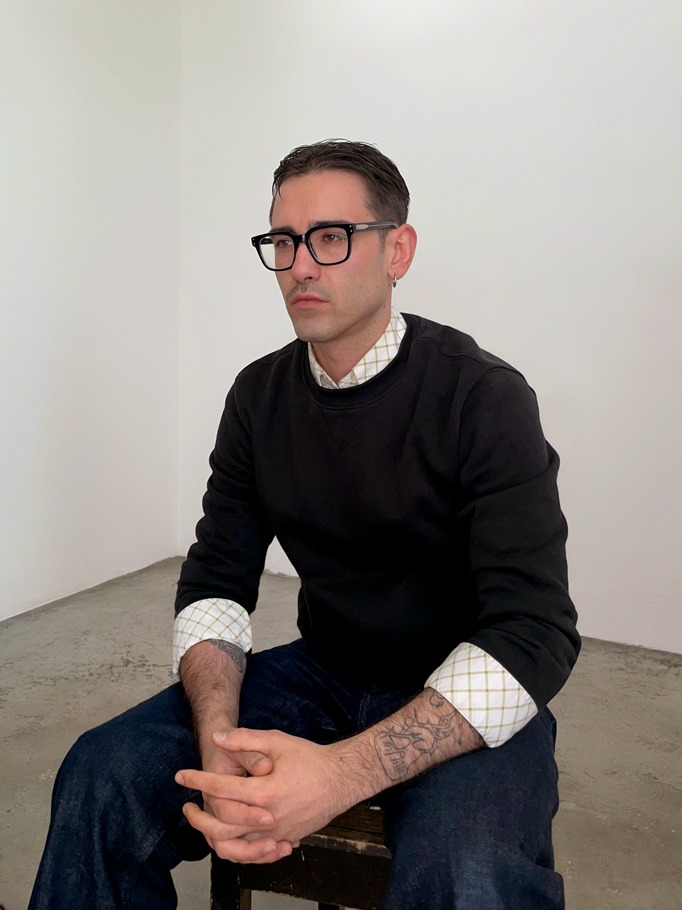

Info
Statement del artista
Mi trabajo tiende a situarse en una brecha, un umbral o una estructura, atraído por aquello que acontece entre sus márgenes. Las preguntas, hipótesis y reflexiones que activan mis proyectos contienen de forma recurrente una investigación sobre el lenguaje, la Traba Oulipiana, la estilística poética, las prácticas colectivas y la atención hacia aquellos sistemas simbólicos, gestos y formas culturales que atraviesan la experiencia cotidiana.
Mi práctica explora las relaciones entre lo material y lo inmaterial a través de una permutación constante de disciplinas y lenguajes. Utilizo recursos del texto para construir imágenes, acciones del cuerpo para generar palabras además de otras técnicas que suelen resolverse en dispositivos escultóricos.
Mis proyectos intentan acercar elementos que, a priori, pueden no guardar relación entre sí. A través de la asociación, la traducción y el desplazamiento, propician encuentros que, al rozarse, transforman mutuamente su significado y hacen visibles relaciones que habitualmente pasan desapercibidas.
